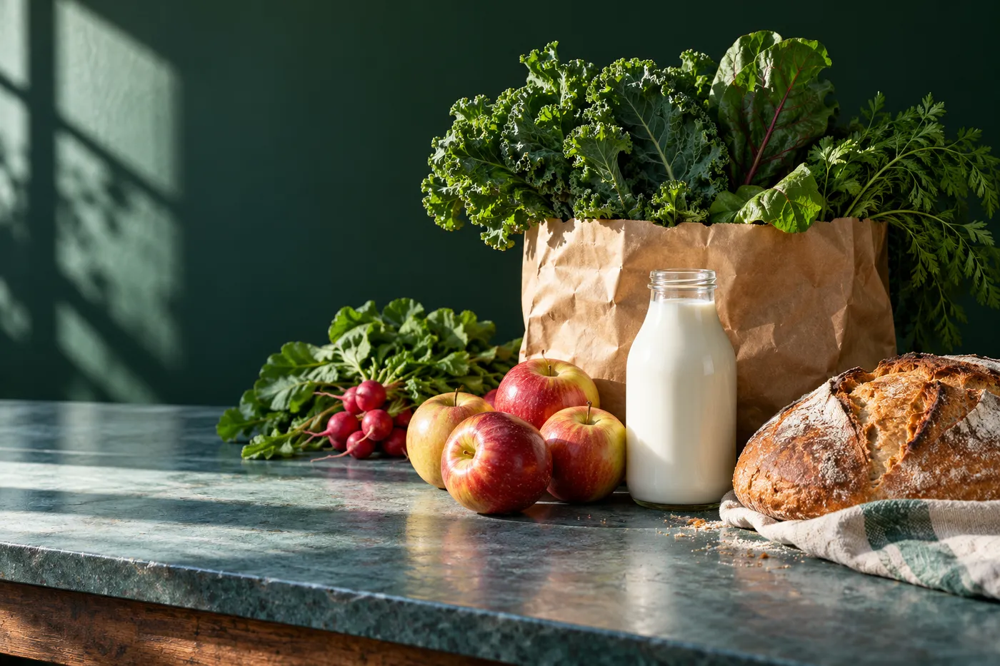

The River
pantry
Groceries in the Bronx. Browse a sample pantry and ask River Grocery & More about what is available today.
Browse the pantry →700 River Ave, Bronx, NY 10451

Start with your basket
A sample pantry organised by what you need to pick up. The store confirms actual brands, sizes and prices.
PantryExplore the sample collection, then ask the store about the current range and availability.
Explore pantry →Demo selection. Confirm products, prices and availability with the store.
The sample pantry
A clear place for the product, pack size and availability. Replace the sample entries with the real shelf.
Call the store to ask about the current selection and opening information before visiting.
Call +19293043802